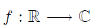

Transformada de Fourier
Dada una función

se llama transformada de Fourier de f a la función compleja
para todo z ∈ R donde la expresión anterior tenga sentido, es decir, donde la integral impropia anterior sea convergente.
Esta convergencia es más difícil de verificar que en el caso de la transformada de Laplace. Suponiendo por ejemplo que t y z son reales, por lo que
Si f(t) es también real, para garantizar la convergencia absoluta de la integral anterior debe satisfacerse que

por lo que las funciones reales que tendrán transformada de Fourier tienen que tener una gráfica como la siguiente
o bien ser nulas fuera de un intervalo compacto [a, b].
Propiedades
1-Existencia
Las dos condiciones siguientes son suficientes para la existencia de la transformada de Fourier de un función f(t) definida en R y son:
2. f(t) es absolutamente integrable en R.
Linealidad de la transformación de Fourier
Para cualesquiera funciones f(t) y g(t) cuyas transformadas de Fourier existen y para constantes a y b cualesquiera
La prueba de esta propiedad viene directamente de la linealidad de la integral ya que
{kind=link}
Transformada de Fourier de la derivada
Sea f una función continua y absolutamente integrable en R con
{kind=link}
y f´ 0 continua a trozos en R. Entonces

La demostración de este resultado se realiza mediante la fórmula de integración por partes
{kind=link}
ya que,
{kind=link}
Mediante dos aplicaciones sucesivas de la formula de integración por partes se obtiene
Se aplicará lo mismo para derivadas superiores obteniendo que para n ≥ 1{kind=link}
{kind=link}
Cambio de escala
Sea a > 0. Si f es una función continua y absolutamente integrable en R, entonces
{kind=link}
La demostración de este resultado se realiza mediante el cambio de variable at = s donde adt = ds y como a > 0.
{kind=link}
{kind=link}
2-Transformada de Fourier inversa
Derivada de la transformada
Si f es una función continua y absolutamente integrable en R, entonces
{kind=link}
Convolución
La convolución de funciones corresponde a la multiplicación de sus transformadas de Fourier. Sean f y g dos funciones continuas por secciones, acotadas y absolutamente integrables. Entonces
{kind=link}
como,
{kind=link}
y haciendo ahora el cambio de variable t + s = x
3-Transformada de Fourier inversa{kind=link}
Sea f(t) una función compleja de variable real que verifica:
1. Es continua o continua a trozos en cualquier intervalo finito de R. Si es continua a trozos, en los puntos de discontinuidad está definida por:
{kind=link}
2. Contiene un número finito de extremos relativos.
3. Existe
entonces se verifica la fórmula de la integral de Fourier{kind=link}
{kind=link}
Sabemos que la transformada de Fourier de la función f es
{kind=link}
por lo tanto la fórmula de la integral de Fourier puede escribirse como
{kind=link}
y escribimos
{kind=link}
que es la expresión de la transformada inversa de Fourier. Esquemáticamente
{kind=link}
Si f(t) es una función dada, la expresión
{kind=link}
es una ecuación integral de función incógnita F(z), de tipo singular por ser la integral impropia. La solución de esta ecuación integral es

A F(z) se le llama también función espectral de la función f(t). Por tratarse de una fórmula integral hereda las propiedades de la integración, en particular la linealidad
{kind=link}